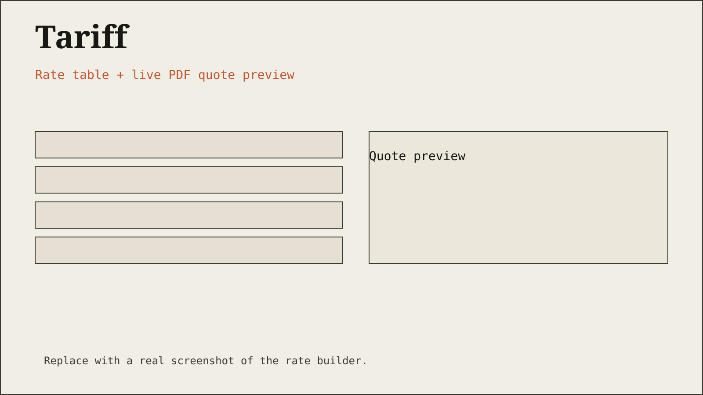
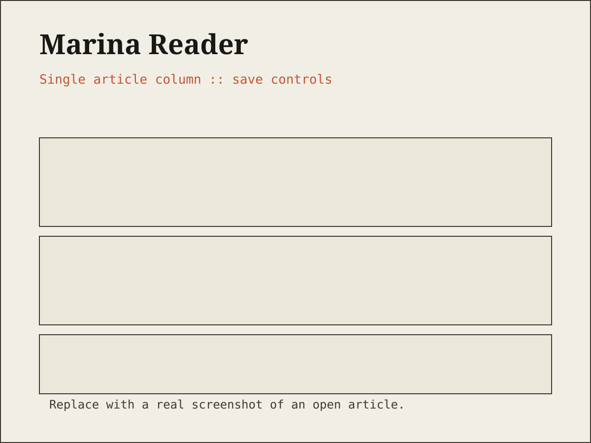

Tariff
I rebuilt the quoting portal for a Chennai freight forwarder whose old exports kept timing out. Rates now assemble into clean PDF quotes in the browser, without dropping the session.
React · TypeScript · Vite · jsPDF
Frontend developer in Chennai — building interfaces that load fast and read clearly.
01 — About
I have no background in IT or web development. I'm currently working through the fundamentals — HTML, CSS, and JavaScript — and building muscle memory by coding by hand instead of relying on templates. I'm in the phase where I'm still figuring out how the browser actually works, and that's exactly where I want to be right now.
02 — Selected work

I rebuilt the quoting portal for a Chennai freight forwarder whose old exports kept timing out. Rates now assemble into clean PDF quotes in the browser, without dropping the session.
React · TypeScript · Vite · jsPDF

A reader that strips web articles down to one clean column for the train home. I built it because every reader app I tried wanted my email before the article.
Vanilla JS · IndexedDB · Service Worker

A real-time tracker for the MTC buses I take every day, listing arrivals by stop instead of by route. It runs on my weakest network mode and still updates before the conductor rings the bell.
Vanilla JS · Leaflet · Service Worker
03 — Skills
Languages
JavaScript, TypeScript, HTML, CSS
Frameworks
React, Sveltekit
Tools
Git
04 — Contact
If you have a frontend that needs untangling, or a small project that has to start clean, email is the fastest way to reach me.